Running Our Project
The following are the steps in order which show the procedures and the outcome of the system.
Step 1
When the user opens the website, the first appearnce will be the index page.In order to continue, the user must select the tab called "Become an internet master today" or the learn option from the menu.
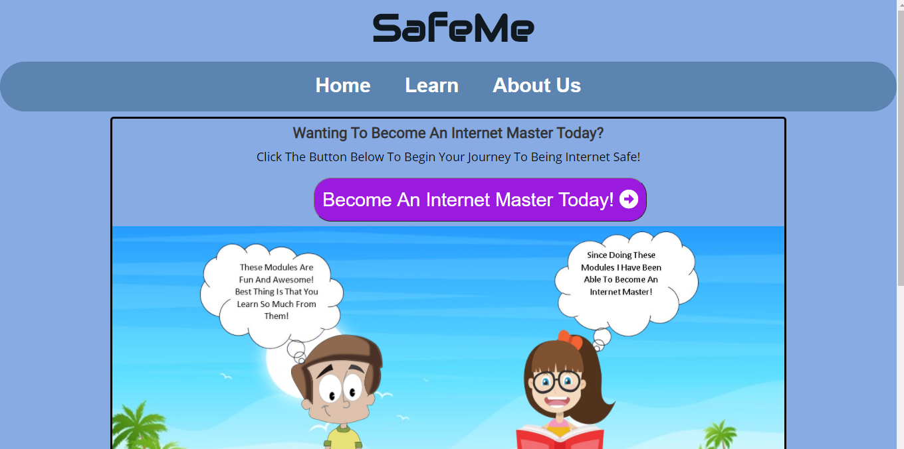Step 2
The following is the illustration of the modules about selected and critical topics that are presented. The user must select one by slecting either purple tabs with the module name
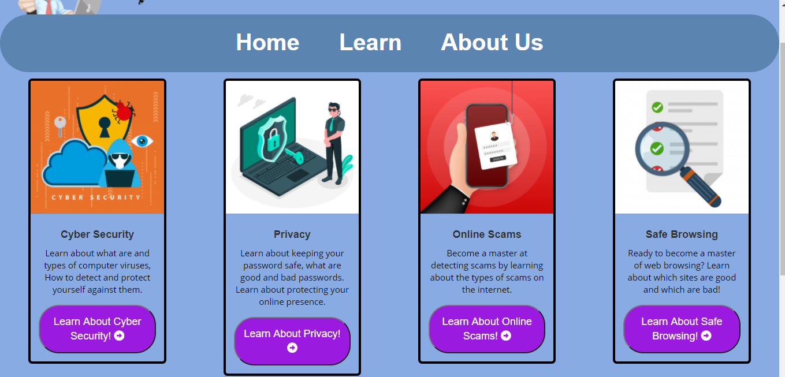All the other modules have the same approach and format as explained and illustrated in the further steps below.
Step 3
Upon clicking one of the modules information and topics of that subject will be presented as illustrated below. Key information is then highlighted and presented using po-ups.
E.g. the term malicious software when clicking it it pops up with in-depth information
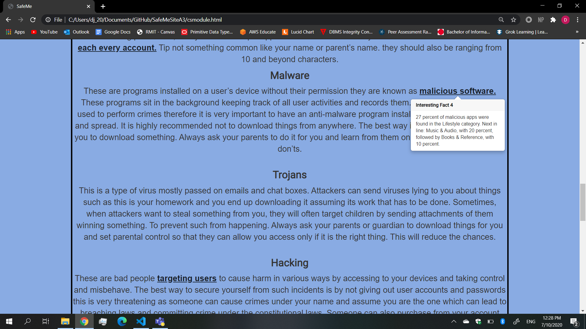Step 4
The illustration below is the advancement of the illustration above that focuses on the interectiveness by putting educational videos for further knowledge.
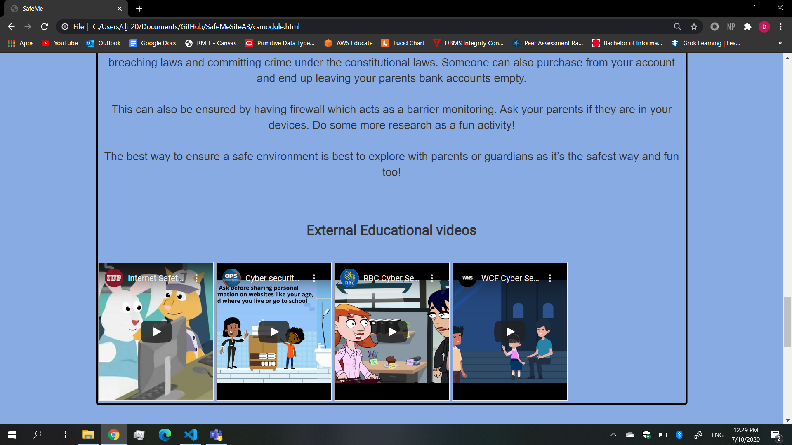Step 5
Nearing the end, to test the users attentiveness, dillema cards can be used to see if one is on the right track. these cards are based on the inoformationand upon clicking the right option it gives a breif explanation followed by a true or false statement as illustrated below.
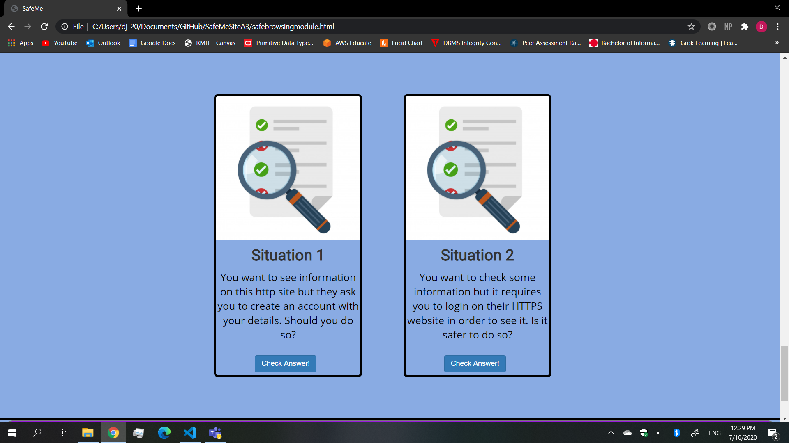Step 6
Lastly at the end of each module, there is a quizz to test the understanding. this can be accessed by clicking the "Attempt quizz" button. the user will then have to select the right answers based on the questions and a total will be genrated and show the outcome.and a certificate can be generated after succesfully passing as illustrated below
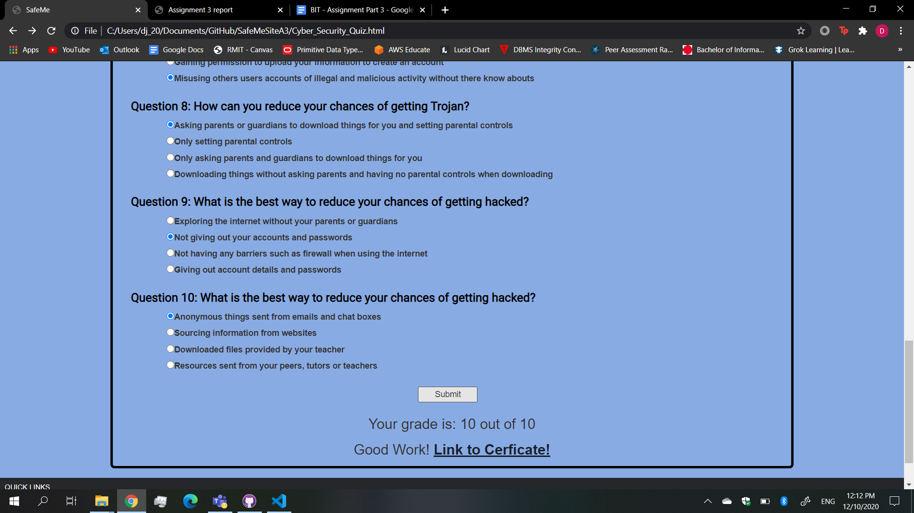Step 7
Upun successful completion, the custom certificate will then be generated after filling details as shown in the image below
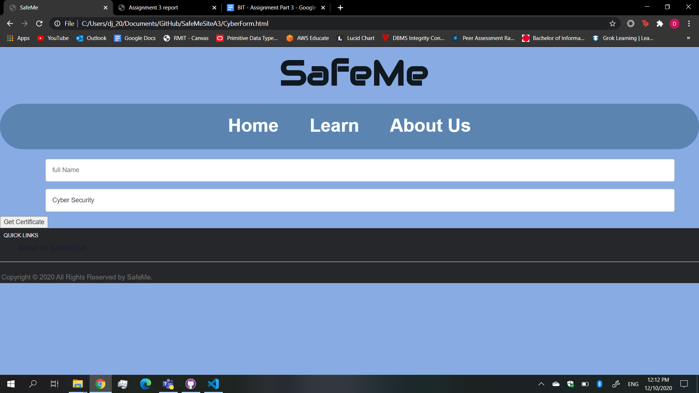Then the certificate is then issued as illustrated below after filling in the fields illustrated above

Step 8
Finally, if someone has queries or inquiries they can make use of the annoymous message box and communicate to find out further information as illustrated below if needed to by filling required details and chatting as illustrated below.
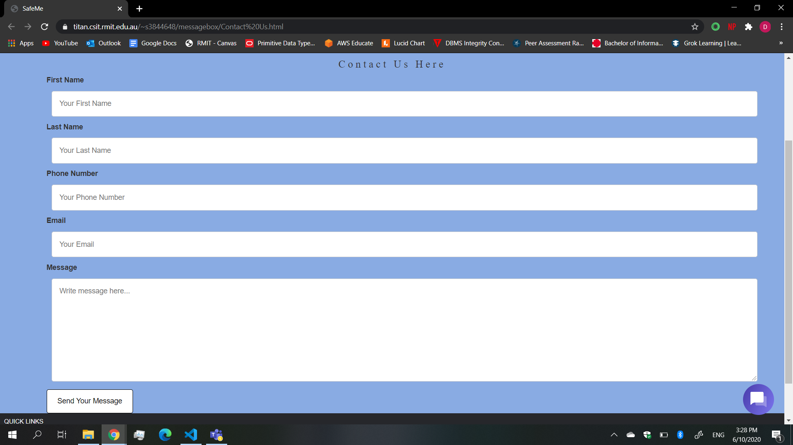 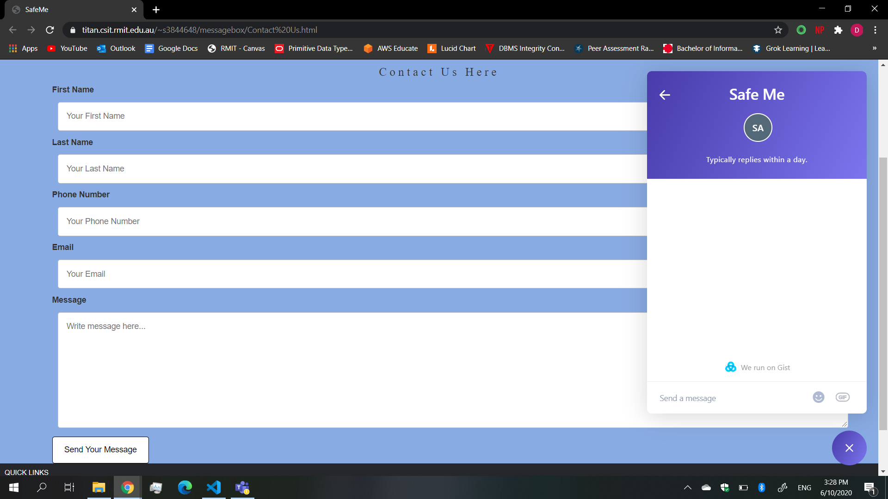 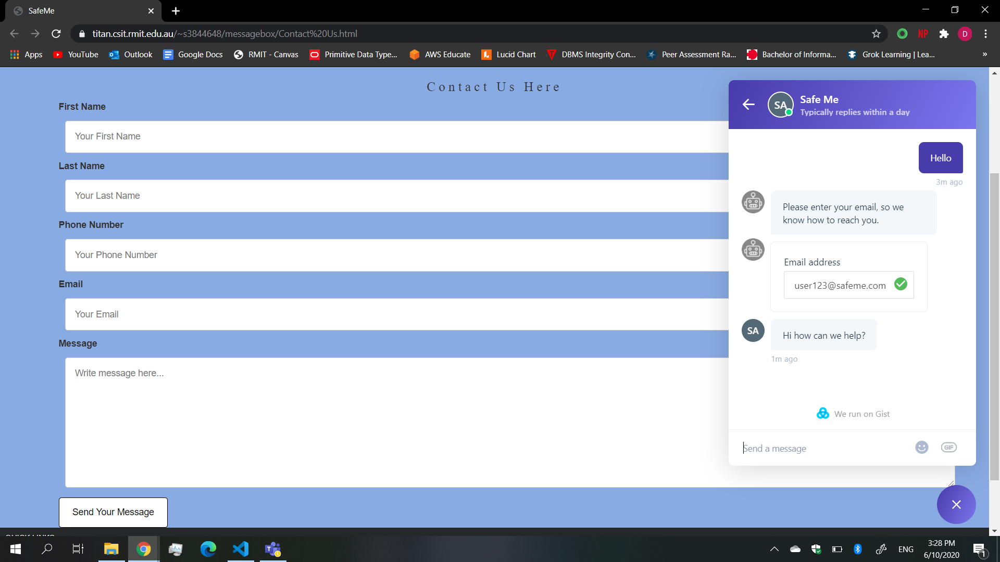 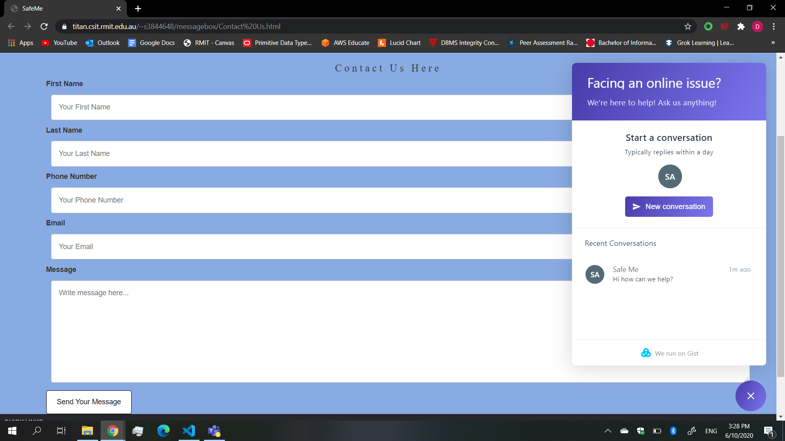The same steps and approach apply for the rest of the modules.